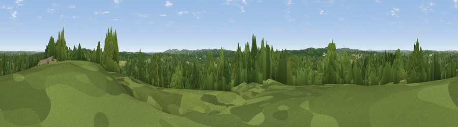

Viewpoint near Cripps Corner
#36639 in England · top 49% of its area beats it · near Cripps CornerThe view, rendered

A 360° render of this exact spot computed from the terrain model, tree cover and land cover — summer colours, afternoon light, calibrated against photographs of famous viewpoints. Real trees, hedges and buildings will differ in detail.
The panorama
Grey silhouette: terrain skyline in each direction (720 bearings, Earth curvature and refraction included). Dashed green: skyline with trees (+15 m) and buildings (+8 m) as obstacles. Blue strip: how far the ground is visible on each bearing.
Where the view opens
Wedge length = distance to the farthest visible ground on that bearing (vegetation-aware). Rings at 10, 25 and 50 km.
What fills the view
61% woodland · 33% grassland · 5% cropland · 2% built-up
Angular shares of the visible panorama (visual magnitude), not map area. Landscape diversity 0.38 (0–1 Shannon).
Key numbers
More beautiful places nearby
The staircase of upgrades: each row has a higher view potential than everything closer. Driving times are estimates from straight-line distance, calibrated against real road routing — check an actual route before setting out.
| Place | Direction | Drive | Score |
|---|---|---|---|
| Viewpoint near Mountfield | WNW · 2 km | ~6 min | 44.1 |
| Viewpoint near Staplecross | NNE · 3 km | ~8 min | 45.8 |
| Silver Hill | NNW · 6 km | ~12 min | 54.9 |
| Viewpoint near Netherfield | W · 6 km | ~12 min | 64.5 |
| Viewpoint near Brightling | W · 9 km | ~18 min | 68.0 |
| Brightling Obelisk [Brightling Down] | W · 9 km | ~19 min | 69.1 |
| Viewpoint near Three Oaks | SE · 10 km | ~20 min | 69.3 |
| Viewpoint near Guestling Green | SE · 12 km | ~23 min | 72.2 |
50.95891, 0.51219 · source: screening · position refined by local search. Computed location — check access rights before visiting.